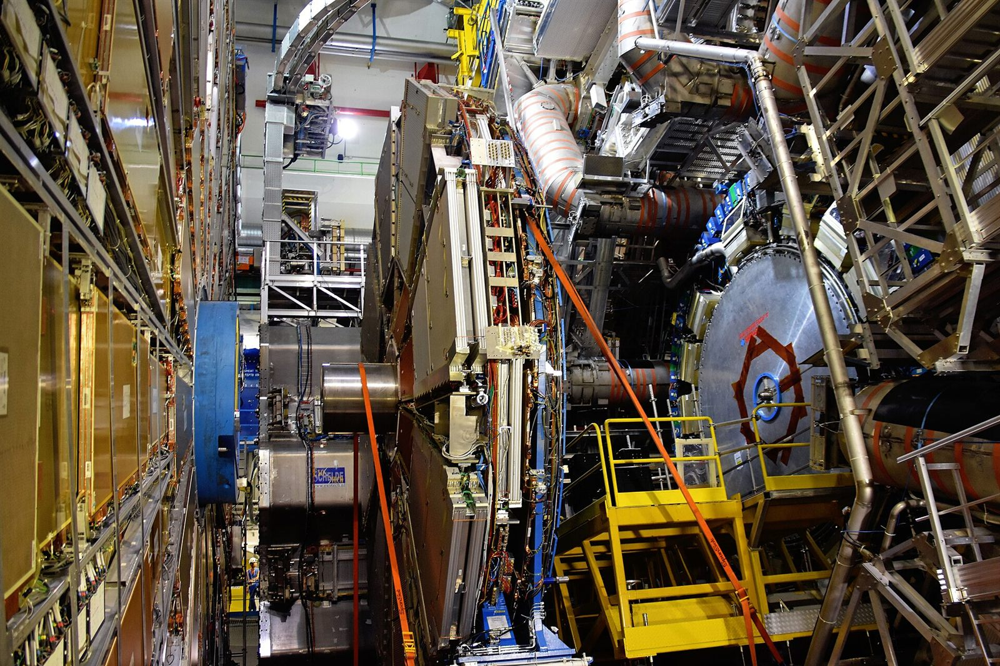
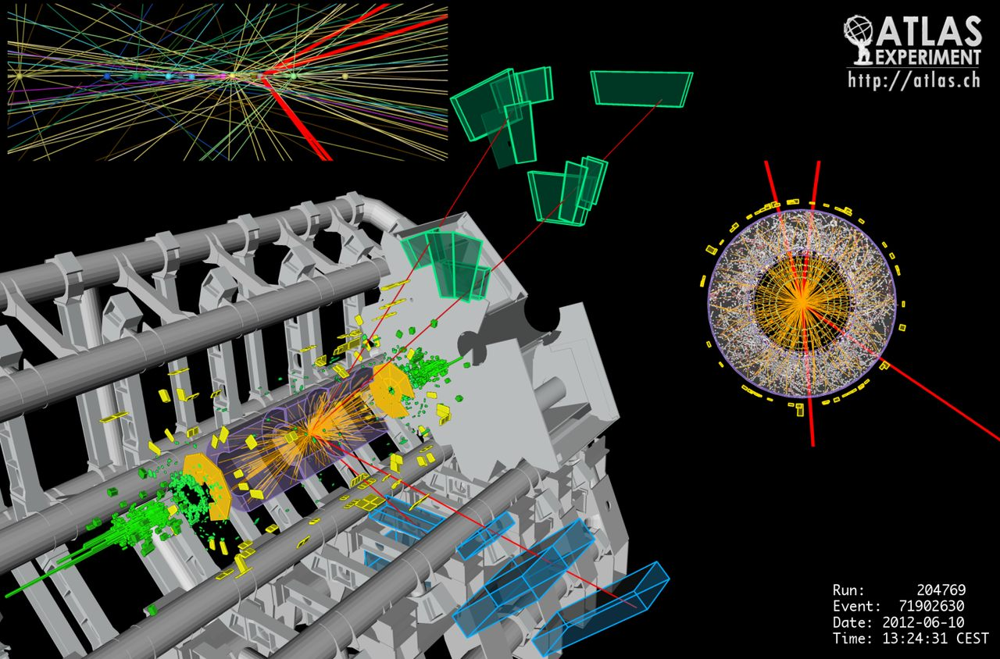
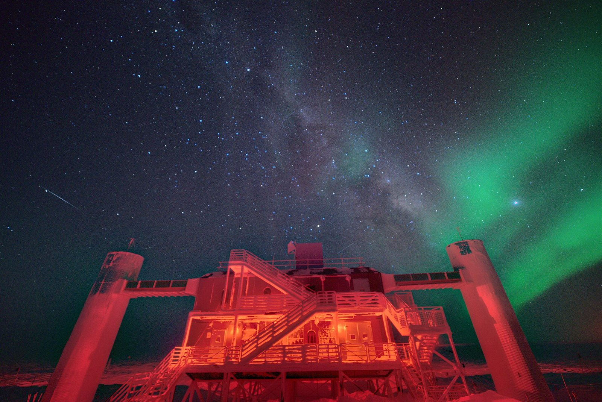
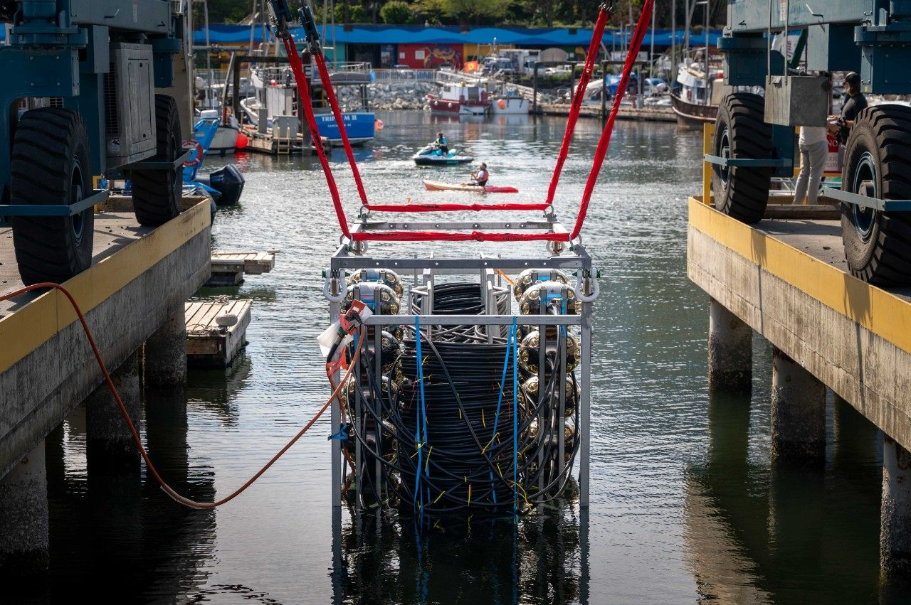
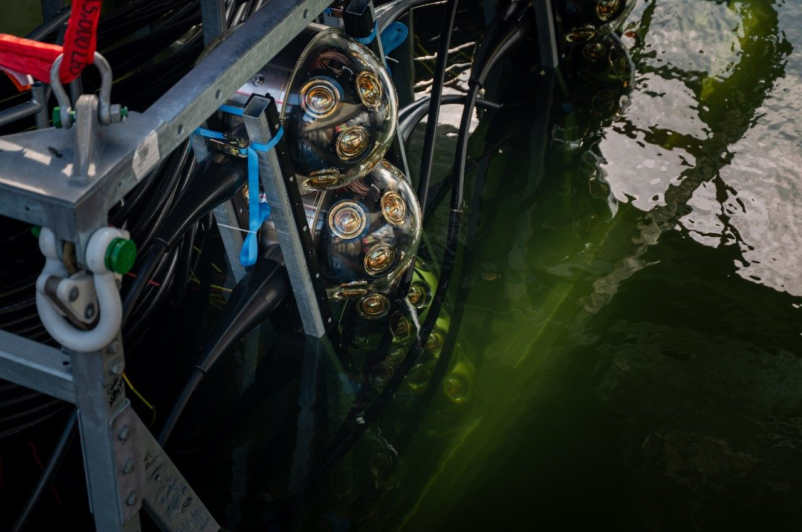

Photo: the ATLAS detector, by SimonWaldherr, CC BY-SA 4.0, via Wikimedia Commons

SFU physicists study the properties of the Higgs boson, search for new long-lived particles and other signs of physics beyond the Standard Model, and work on detector calibration and track reconstruction.
In 2012, ATLAS and its sister experiment CMS discovered the Higgs boson, the particle tied to the field that gives other fundamental particles their mass. It completed the Standard Model of particle physics, but the Standard Model still can't explain dark matter or why the universe is made of matter rather than antimatter. So ATLAS also hunts for new particles that could. ATLAS sees up to 1.7 billion proton collisions a second, and its trigger system keeps only the most promising: roughly one in a million.


How it works
Protons collide
Beams of protons from the Large Hadron Collider collide at the centre of ATLAS.
Tracks are recorded
Charged particles curve in the 2-tesla field of a solenoid magnet, and the inner tracker records their paths. The curvature gives their momentum. SFU helps build the new tracker.
Energy is measured
Calorimeters stop almost all particles and measure their energy. Muons get through and are measured again in the muon chambers; neutrinos escape unseen, showing up as missing momentum.
Step inside ATLAS
A 360° look around the detector in its cavern, 100 metres below CERN. Drag the video, or move your phone, to look in any direction.
Open to students
Research areas
Graduate students join the team's work in these areas, and usually combine a physics analysis with work on the detector itself.
- The Higgs boson and new particlesMeasuring the properties of the Higgs boson and searching for new particles, such as long-lived particles or heavy resonances, often with machine learning.
- Calibration and trackingCalibrating how the detector measures jets of particles, identifying tau leptons, and reconstructing the tracks of charged particles.
- Building the new trackerAssembling and testing tracker petals for the High-Luminosity LHC with the SFU and TRIUMF team. More below.
- Computing at scaleRunning analyses over petabytes of data on the ATLAS Tier-1 centre and national supercomputers.
The new ATLAS Inner Tracker (ITk)
For the High-Luminosity LHC, which is due to start around 2030 with about ten times as many collisions, ATLAS is replacing its whole inner detector with a new all-silicon tracker. The SFU and TRIUMF team was the first to produce a petal for installation (a wedge of silicon strip sensors for the tracker's end-caps) and plans to make about 100 of the 400 petals being produced worldwide.
Where things stand
- 2008The LHC's first proton beams circulate, with ATLAS complete and ready.
- 2010First collisions at 7 TeV, a record energy at the time.
- July 2012ATLAS and CMS announce the discovery of the Higgs boson.
- 2015–2018Run 2, at 13 TeV.
- 2022–2026Run 3, at a record 13.6 TeV, ends on 27 June 2026 with ATLAS's largest dataset yet.
- NowA long shutdown: ATLAS is being taken apart and rebuilt for the High-Luminosity LHC, and the first petals are going into the new tracker's end-caps. Meanwhile, the Run 3 data are analyzed.
- 2030Beams return for the High-Luminosity LHC, with about ten times as many collisions over its lifetime.
ATLAS papers on INSPIRE → ATLAS news → ATLAS computing at SFU →

Photo: the IceCube Lab at the South Pole, with the hose reel used for drilling. U.S. Geological Survey, public domain, via USGS
IceCube is P‑ONE's older sibling: the same idea, in ice instead of seawater. SFU's Professor Darren Grant was spokesperson of the IceCube Collaboration from 2017 to 2021, and also works on P‑ONE.
Neutrinos barely interact with matter, so they reach us straight from the most violent places in the universe, such as the surroundings of supermassive black holes, without being absorbed or deflected. IceCube was the first detector to see high-energy neutrinos from beyond our solar system, opening up neutrino astronomy. Its densely instrumented DeepCore region, and now the Upgrade, also make it a precision experiment on the neutrinos themselves.


How it works
A neutrino interacts
Now and then a neutrino interacts in the ice or the rock below, producing charged particles such as a muon. Many come up through the Earth, which blocks every other kind of particle.
Light is made
Those particles travel faster than light does in ice, so they give off faint blue Cherenkov light, which carries far through the deep, very clear ice.
Modules detect it
Each optical module records the light with a 25 cm photomultiplier tube, then digitizes and time-stamps it and sends it up the cable to the IceCube Lab on the surface.
Drilling into the South Pole
This time-lapse shows the drill site being moved into position at the South Pole for the IceCube Upgrade. Crews used a 5-megawatt hot-water drill to melt holes about 2.4 km deep into the ice, about three days per hole, then lowered the new strings of sensors into them before the water froze again.
Open to students
Research areas
Students join an international collaboration of more than 450 people from 58 institutions in 14 countries, working in areas like these.
- Neutrino astronomyFinding the sources of high-energy cosmic neutrinos, such as the active galaxy NGC 1068, alone or with telescopes that see light and gravitational waves.
- Neutrino oscillationsMeasuring how neutrinos made in the atmosphere change type as they cross the Earth, with DeepCore and the new Upgrade.
- Dark matter and new physicsSearching neutrino data for signs of dark matter and other physics beyond the Standard Model.
- Reconstruction and calibrationWorking out each neutrino's direction and energy from the light in the sensors, often with machine learning, and mapping how light travels through the ice. More below.
The IceCube Upgrade
In the 2025/26 South Pole season, five new strings went into the ice at the bottom centre of IceCube, far more densely instrumented than the originals. Their new sensors, including multi-photomultiplier modules, are two to three times as sensitive. The Upgrade will sharpen measurements of neutrino oscillations, and its calibration devices will map the ice so precisely that 15 years of archived data can be reanalyzed. It also tests sensor designs for IceCube-Gen2.
Where things stand
- December 2010The 86-string detector is completed at the South Pole.
- 2013First evidence of high-energy neutrinos from beyond the solar system.
- 2018A neutrino is traced to a flaring blazar, TXS 0506+056: the first evidence of a source.
- 2022Evidence of neutrinos from the active galaxy NGC 1068.
- 2025/26The IceCube Upgrade: five new, densely instrumented strings with more than 600 new sensors and calibration devices, at the bottom centre of the detector.
- October 2026Francis Halzen, IceCube's principal investigator, receives the Nobel Prize in Physics.
- NowCommissioning the Upgrade's new instruments, which will sharpen oscillation measurements and how well the ice is understood.
- After thatThe proposed IceCube-Gen2, with eight times IceCube's instrumented volume.

Photo: the first P-ONE line being lowered for testing at Granville Island, June 2026. Simon Fraser University, from SFU News
SFU's Professor Matthias Danninger is the scientific spokesperson of the P‑ONE collaboration. SFU also built precision calibration detectors and high-power light emitters that measure how light travels through the seawater.
P‑ONE uses the same technique as IceCube, but in the deep ocean. Its site in the northeast Pacific sees a different part of the sky to IceCube, so the two complement each other, and it can plug into Ocean Networks Canada's existing seafloor network for power and data. The ocean also brings its own challenges: the lines sway in the currents, and the water glows faintly from radioactive potassium and bioluminescent sea life.

How it works
A neutrino interacts
Now and then a neutrino interacts in the seawater or the seafloor rock, producing charged particles such as a muon.
Light is made
Those particles travel faster than light does in water, so they give off faint blue Cherenkov light in a cone, at about 42° to their path.
Modules detect it
Optical modules spaced along mooring lines about one kilometre long pick up the light. When and where it arrives shows the particle's direction and energy.
Watch the first line go into the water
In June 2026, P‑ONE‑1 was lowered into the harbour at Granville Island in Vancouver for its last test before deployment. It spent more than 12 hours in cold seawater, and every system worked.
Read the Q&A: what is a neutrino telescope, and why was one tested in a Vancouver harbour? →
Open to students
Research areas
P‑ONE is a young experiment, so students help shape it: from building hardware to simulating the detector and analyzing its very first data.
- CalibrationBuilding precision detectors and high-power light emitters that measure how light travels through the seawater.
- Acoustic positioningTracking where every module is as the lines sway in the currents, using sound signals from transceivers on the seafloor.
- Ocean backgroundsModelling the faint glow from potassium-40 and bioluminescent sea life, so it can be told apart from neutrino signals.
- Building the linesTesting components and assembling detector lines in the TRIUMF cleanroom. More below.
Building P‑ONE in Vancouver
P‑ONE's detector lines are put together in the cleanroom at TRIUMF, Canada's particle accelerator centre, where SFU group members work on hardware, integration and assembly. Parts arrive from Canada, the US and Europe, including SFU's calibration instruments. Each one is tested, then mounted on the kilometre-long backbone cable, and every power and optical-fibre connection is checked as the line comes together. P‑ONE‑1 was completed this way in April 2026. Next, the demonstrator's lines, up to six in all, will be assembled and tested at TRIUMF in 2027–2028.
Where things stand
- April 2026The first line, P‑ONE‑1, is fully assembled and integrated in the cleanroom at TRIUMF.
- June 2026Wet test at Granville Island in Vancouver: over 12 hours in cold seawater, with every system working.
- NextDeployment about 2,700 metres down in the Cascadia Basin, on a new 30 km cable extension from Ocean Networks Canada's NEPTUNE observatory. Data-taking starts straight away.
- 2027–2028The lines of a demonstrator, up to six in all, are assembled and tested at TRIUMF.
- After thatIf funded, a full detector of around 100 lines.
Want to work on ATLAS, IceCube or P‑ONE?
Students in the group analyze data, build detectors and learn large-scale computing.